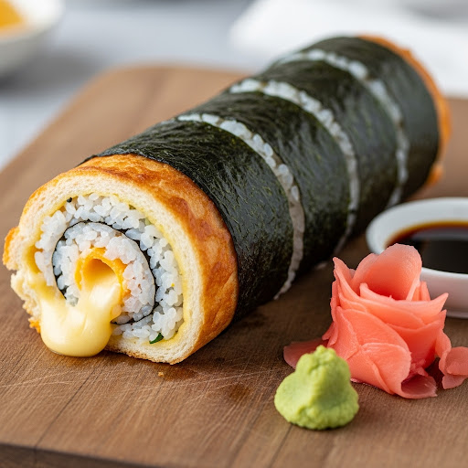

Back when I was 14 I used to spend my time in maths class reading comic books under the desk. One of my favourite comic books was actually from Japan, a type of comic book known as Manga, and it was about a hard working teenager who finds a magical notebook. What I loved most about this story was how it showed me all about japanese culture. And in particular about Japanese food! I grew up in a small town in the North Island though so I never had a chance to try Japanese food.
When I moved to Invercargill one of the things that people kept going on about was how I had to try some 'Southern Sushi' and I was so excited to finally get to try some Japanese food after all these years. I tried ordering some at a couple of restaurants and I didn't have any luck until one day I was at a cafe and it was on the menu so I of course had to try it. I was hungry and I was excited until the food appeared and I was disappointed. This wasn't sushi at all! Where was the rice? Where was the seaweed? Where was the slivers of avocado and strips of chicken?
My mumma always taught me to eat what you order though so I tried it and it was kinda already. But I went home with a determination to do better. So I present to you my recipe for Southern Sushi
